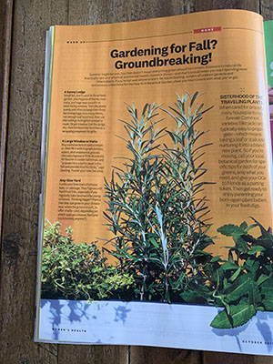

Focal Point and Emphasis
From the textbook White Space is Not Your Enemy: a focal point is the most important thing visually on any layout. Sometimes called the principle of emphasis, the focal point is the center of attention in the design or layout. Another term for focal point is the center of visual interest or CVI because it focuses the eye’s attention.
There are two rules to remember about focal points:
- Rule No. 1
- Rule No. 2
Have one. Without a focal point, the viewer doesn’t know where to look first. If you’re trying to capture viewers’ attention and control the way their eyes move across the layout, then you need a focal point or CVI.
Limit one per screen or page, or story or ad. Without a focal point, the eye wanders aimlessly around the layout. So if you have two focal points, then you don’t really have any focal point.
Essentially a focal point is so important because the whole design revolves around it. It's the element that stands out and gets noticed first when a person first looks at a design. A few ways to create emphasis in a design are by: taking an element and making it bigger, bolder, or brighter, by putting it in a contrasting color, or by surrounding it with white space. It is also really important to remember that there should only be one focal point. As previously mentioned the focal point is the SINGLE most important item in a design, having more than one focal point takes away from its importance.
Smart Phone Image
DSLR Image
As a visual media student when making designs I need to make sure that I am creating my designs around a main focal point or emphasis. In the picture you can see that the whole design revolves around the center image. I will try to use some type of central image as a focal point in my designs.